ACT 01 Импорт

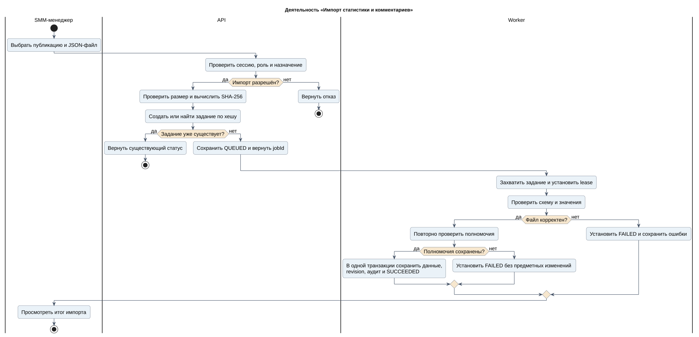
Проектирование информационной системы управления SMM-кампаниями и анализа эффективности видеоконтента
18 UML-диаграмм · 20 текстовых материалов · исходники PlantUML и изображения. Это проектные модели для курсовой.

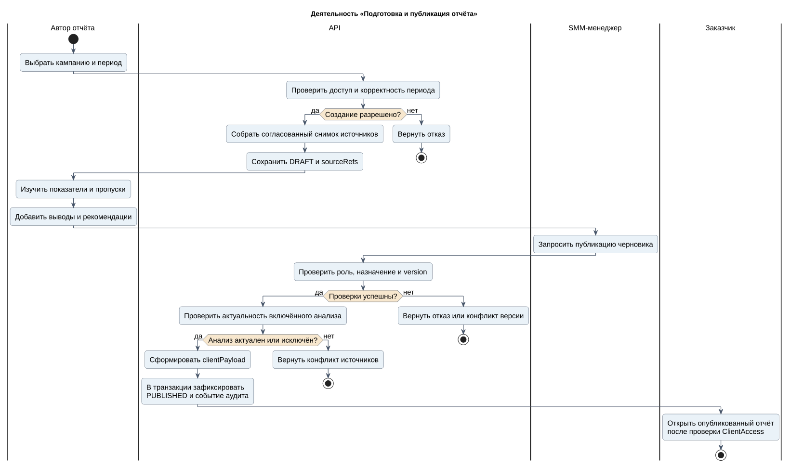
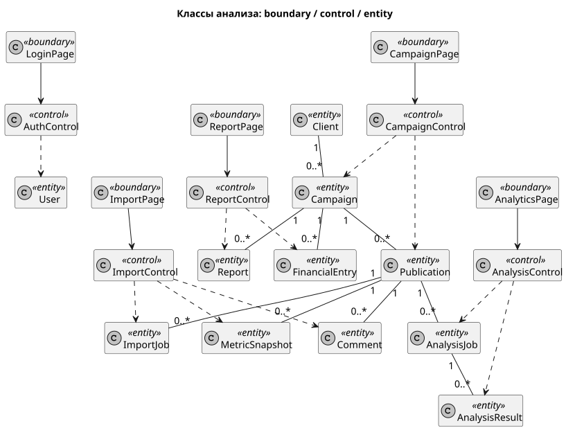
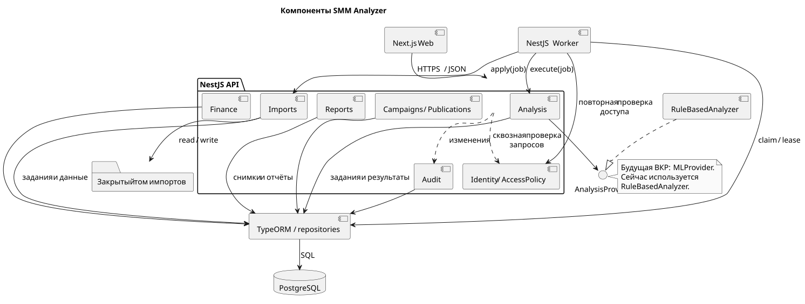
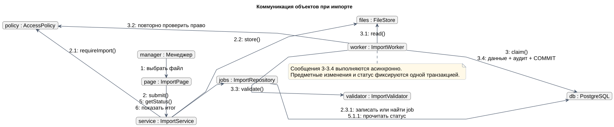
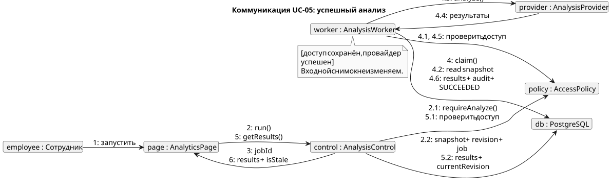
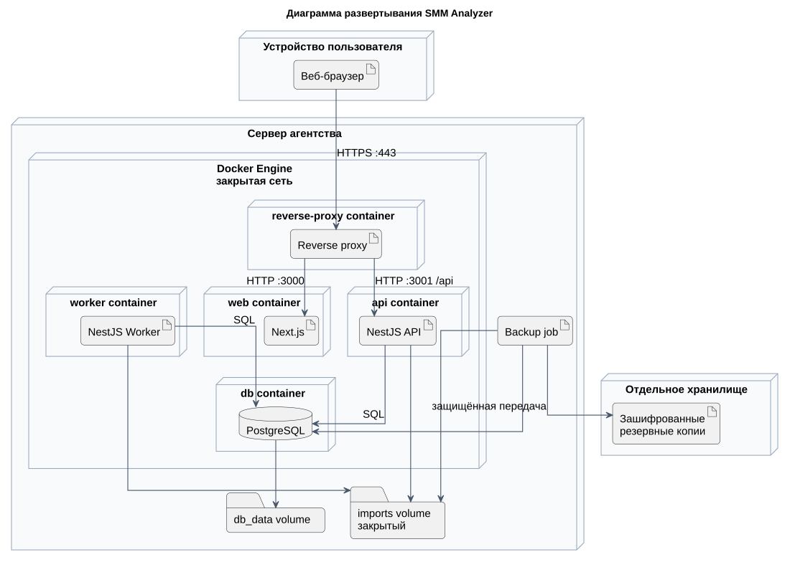
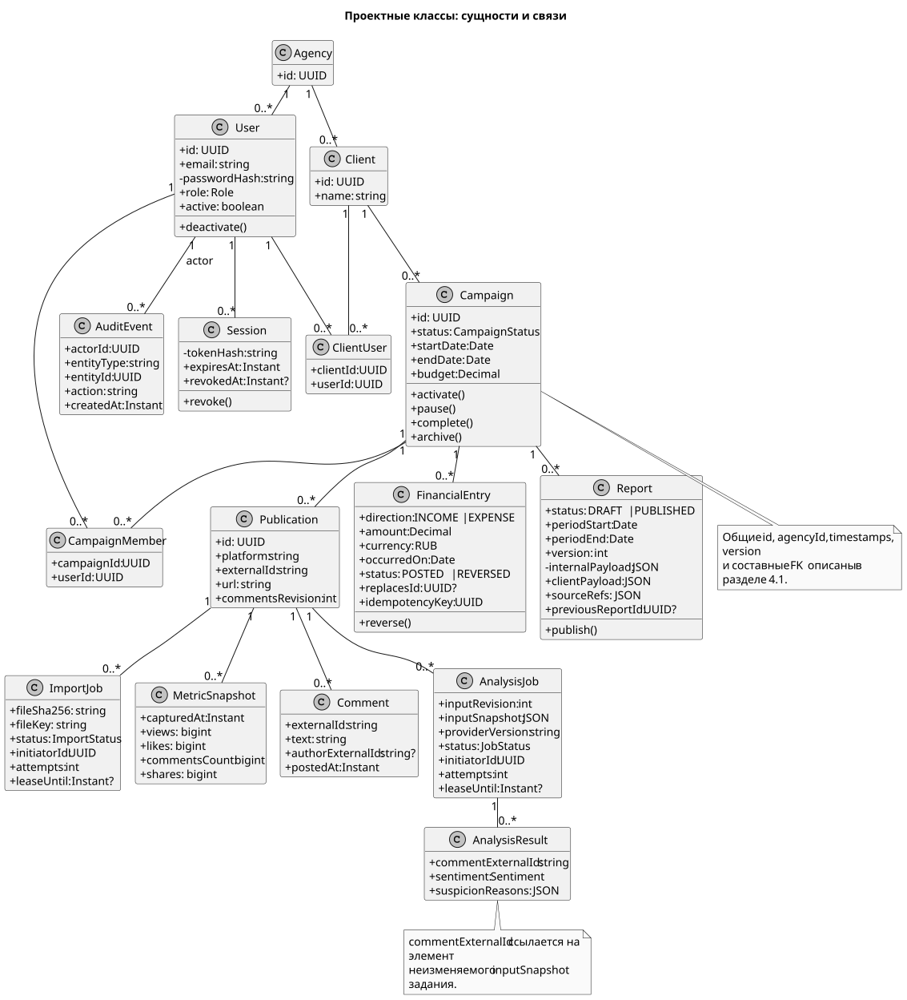
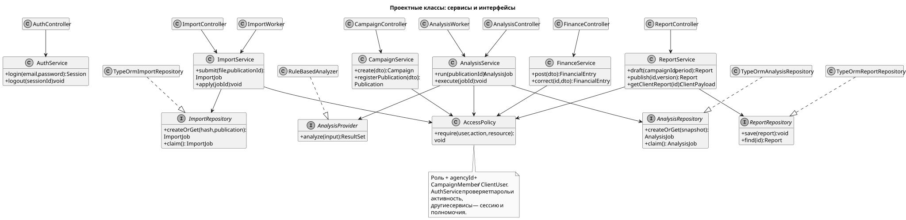
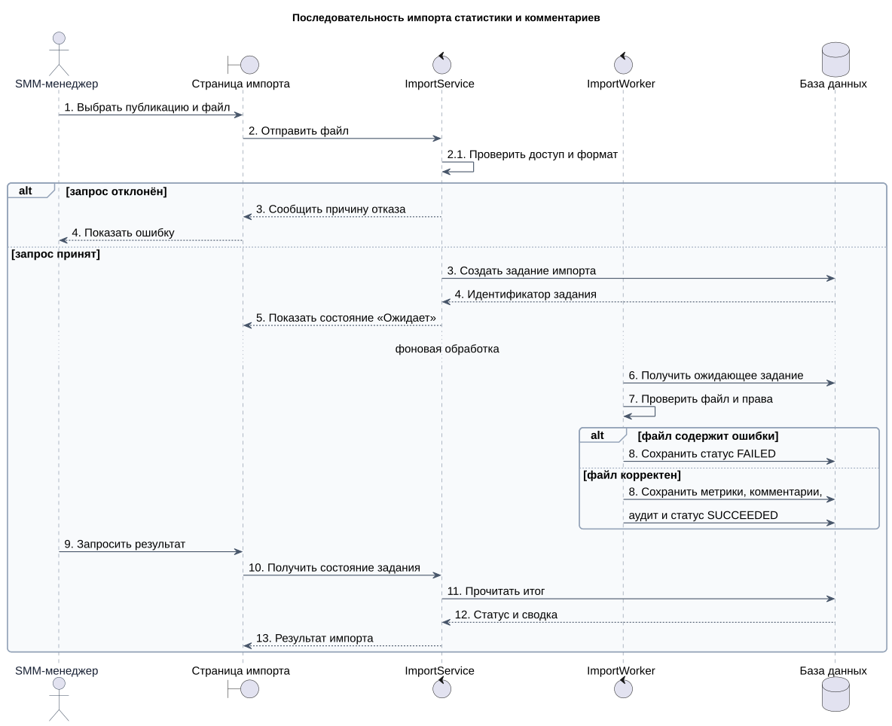
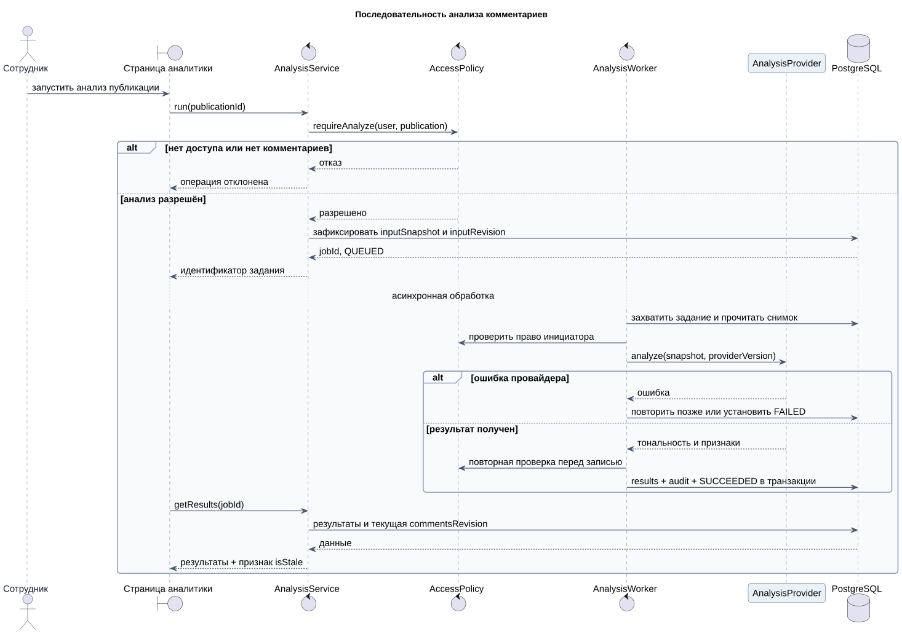
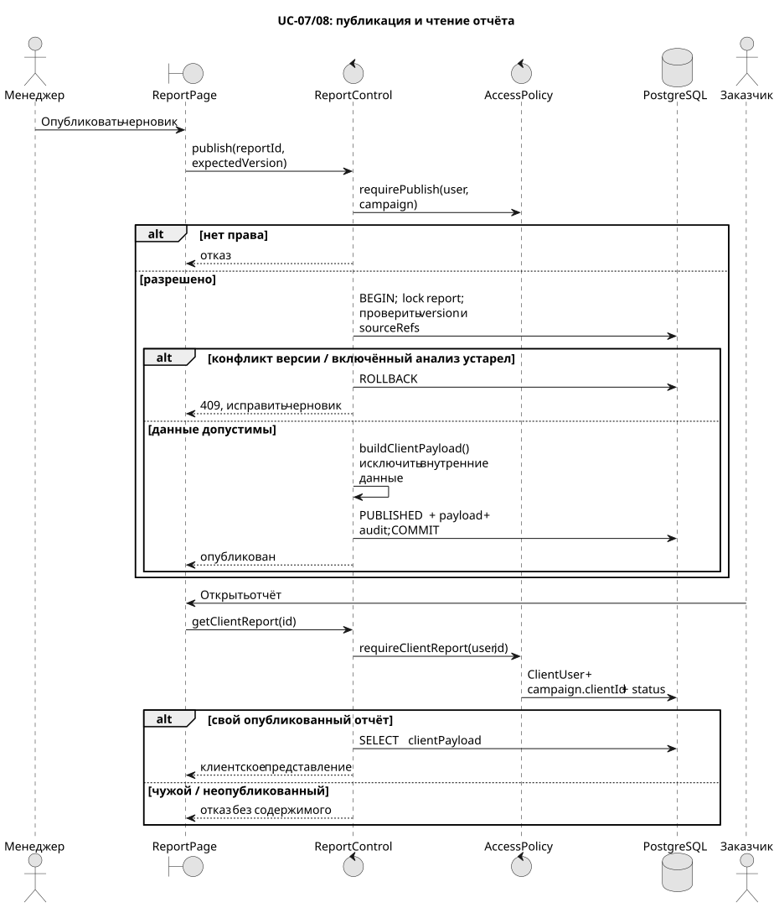
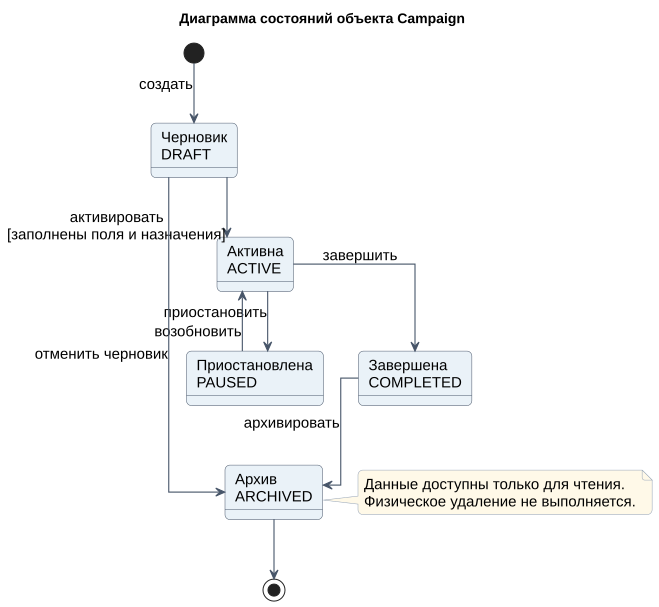
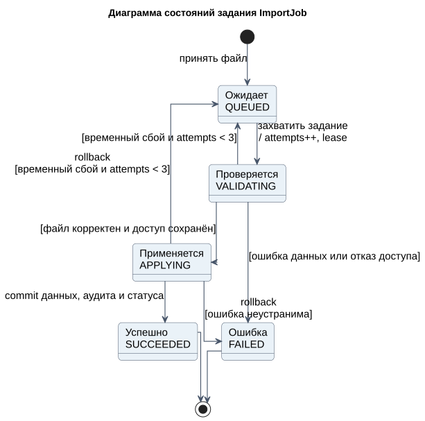
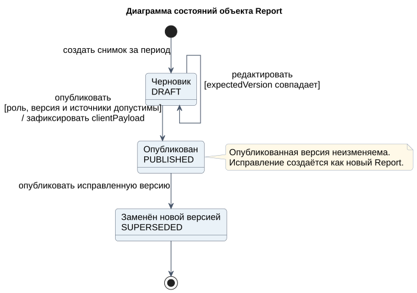
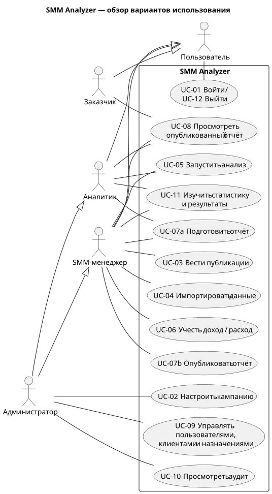
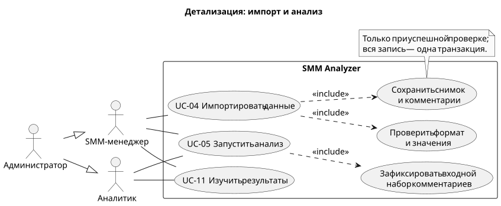
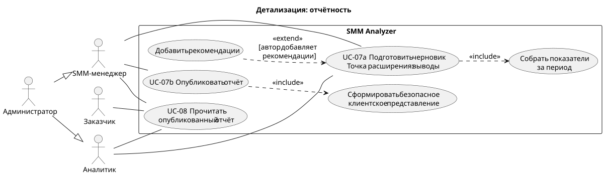